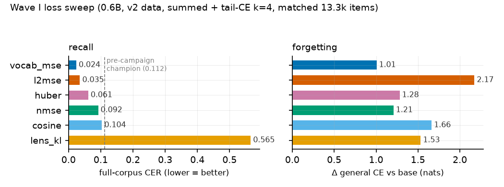
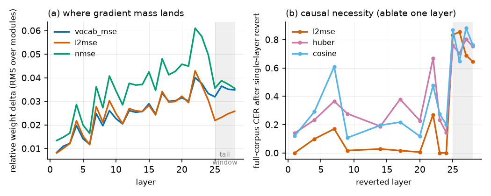
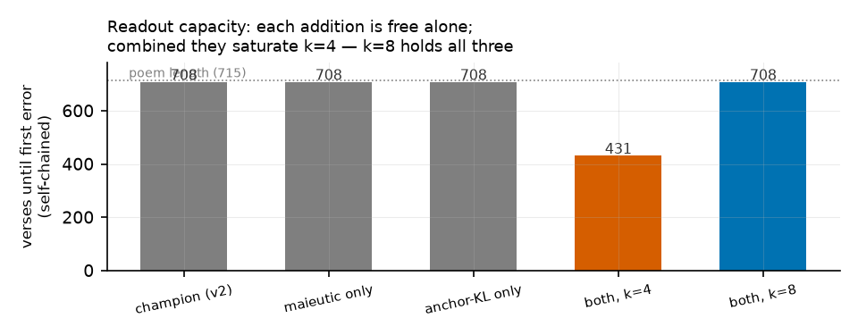
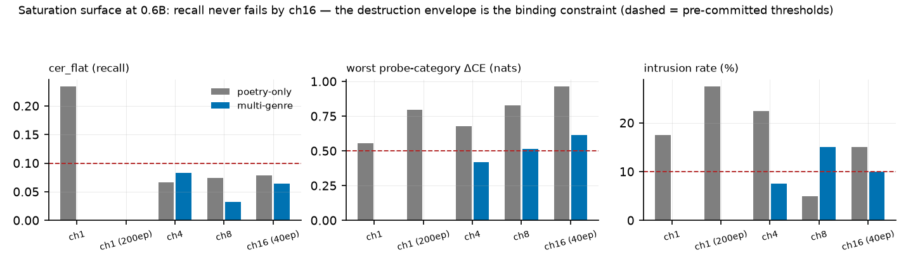
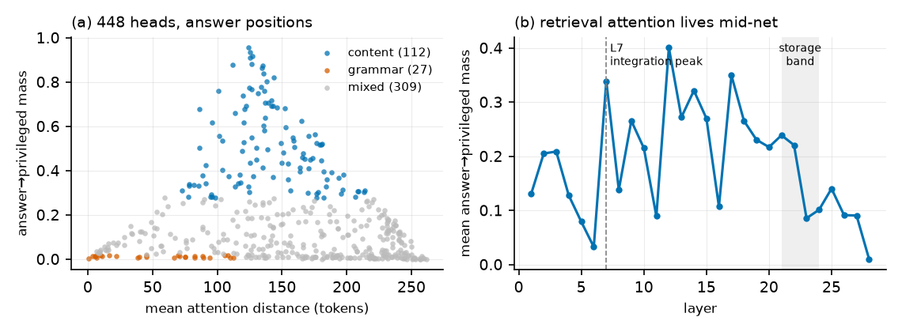
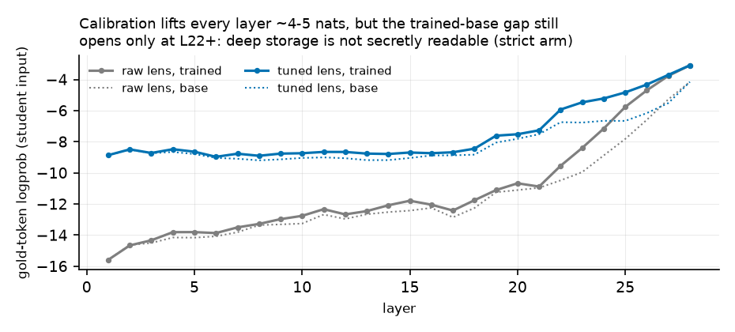
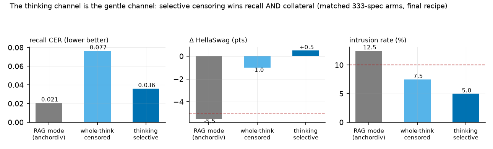
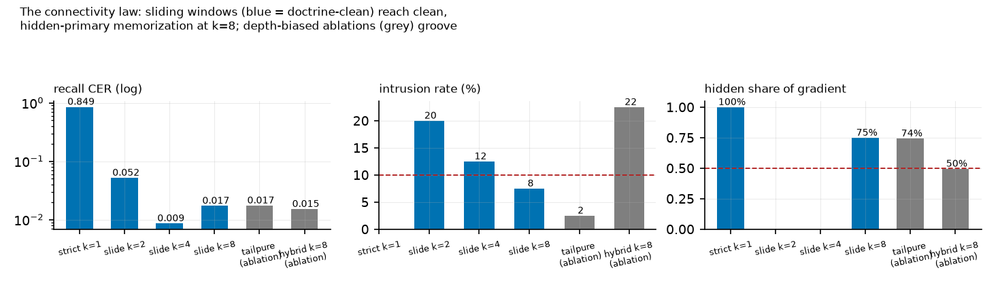

The Pierre Menard Program, Stage 1 — campaign report, 2026-07-04
selfupdate / layerwise branch · Qwen3-0.6B → 20B-class · repository: supercomplex/selfupdate_lw
ERRATUM & RECLASSIFICATION (2026-07-05). Every arm in this report trained its readout window with cross-entropy (log loss) against the original text — task supervision, not distillation. The mechanism was always disclosed (the term was named “tail-CE”) but misframed as part of the distillation method. All Campaign-1 arms are hereby reclassified as hybrid baselines (task-label readout, ~25% of gradient by measured attribution). Storage results (per-layer trajectory matching, the lens and chimera analyses, localization) are unaffected: those gradients never saw the reference text. Campaign 2 (addendum below) established the corrected method — uniform sliding windows, teacher-sourced everywhere except an irreducible, bounded reference term whose necessity is now a measured law (the “last 3%”, C2-34) and which corresponds, in the deployment setting, to CE on the teacher’s own transcript. Markers reading “[expunged]” record a schedule removed under damnatio memoriae: its readout ignored configuration and trained on the reference unconditionally, invalidating it even as a baseline. One further terminology correction applies throughout: what this report called “gold” is the evaluation reference; it was never a legitimate training target.
We study a training regime in which a language model teaches itself a long text: the same model plays teacher (prompt contains a privileged RAG passage) and student (passage removed), and each student block is trained to reproduce the teacher’s hidden state at its own depth, with every backward pass confined to a single block. We call the regime forward-only trajectory matching: because teacher and student share architecture and initial weights, the teacher’s forward pass is the supervision trajectory, sampled at every layer, with no global backward anywhere in the system except one explicitly bounded top window. In a 24–40 h autonomous campaign (~50 runs, Qwen3-0.6B/1.7B plus five other model families) we find: (1) a new storage loss — MSE measured through the frozen unembedding’s Gram matrix (vocab_mse) — beats standard hidden-matching losses on recall and forgetting, and writes storage in a format portable across readouts; (2) memory storage and behavioral readout dissociate causally: storage is distributed and redundant at ~80% fractional depth, while all pathologies of the regime live in the top-k readout window — it is fragile, template-locked, intrusion-prone, and capacity-limited; (3) “catastrophic remembering” — damage concentrated on the memorized content’s genre neighbors — is a distinct, measurable failure mode, halved by a KL-to-base anchor through the readout window and worsened by a naive CE anchor; (4) Socratic (“maieutic”) dialogue frames at additive data budget cure the readout’s template lock completely while improving plain recitation; and (5) the readout window has a measurable capacity: k=4 supports any two of {elicitation diversity, anchor discipline, full-poem chain depth}, k=8 supports all three. The final 0.6B model recites the complete 715-verse La tierra de Alvargonzález self-chained with its first error at verse 708, answers dialogue-framed questions at 100% exact lines, and pays +0.51 nats mean general-CE — with the storage phase trainable one block at a time, the contract required for streaming this method to 120B-class models.
Standard knowledge distillation and fine-tuning assign credit through a full-depth backward pass. That coupling is what makes very large models expensive to update: the whole network must be resident and connected. This work asks how much of a concrete memorization task — verbatim recall of a 715-verse poem, elicited without any retrieval context — survives when credit assignment is strictly block-local.
The setting makes locality unusually cheap. Teacher and student are the same checkpoint; the teacher sees shared_prefix | privileged | shared_mid | answer while the student sees the same prompt with privileged deleted. At every aligned token position and every layer L, the teacher’s hidden state h_L is a well-defined vector in the student’s own coordinate system — no learned projection, no auxiliary head, no label. Each student block trains against its own depth’s target from a detached input; activations are detached both entering and leaving the block.
Contributions, in the order the campaign produced them:
vocab_mse measures hidden error as ‖W·Δh‖² through the frozen unembedding W — equivalently a quadratic form under the Gram matrix M = WᵀW, computable with one 4 MB buffer. It is the flat local approximation of a per-layer KL through the logit lens, and it wins the loss sweep on every axis (Fig. 1).vocab_mse’s is portable — which predicted a two-phase pipeline ([expunged]) where a readout trained on a frozen, fully-locally-trained body beats joint training.Whole-network KD (Hinton-style) matches the teacher’s output distribution and needs full-depth backward — the baseline this branch deliberately abandons. Forward-Forward trains layers on a local scalar goodness with positive/negative data, but provides no per-layer vector target. Greedy layerwise training (Bengio 2007; Belilovsky 2019) reaches the global label through per-stage auxiliary heads. Target propagation manufactures local targets with learned inverses, inheriting their approximation error. None exploit the condition that makes our targets exact and free: teacher and student sharing architecture and initialization, so every depth’s target already lives in the student’s coordinates.
Within the design space we also evaluated and rejected alternatives: per-layer lens-KL as the storage loss (killed: 23× champion CER at ~5× compute; the unembedding only decodes final-layer geometry, so inner-layer distribution matching is noise with a gradient); CKA-style rotation-invariant losses (rejected analytically: batch-1 [A,H] slices are rank-deficient, and rotation invariance contradicts the frozen-readout contract); teacher-stream-only routing (teacher_censored alone never recites — the student must finish training on its own input distribution); catechism drills at matched budget (substituting drill items for recitation items undertrains recitation; elicitation diversity must be additive); and anchor-CE (Section 6.2).
Every example is segmented shared_prefix | privileged | shared_mid | answer. The RAG passage (the relevant poem fragment with context padding) is the privileged block; the aligned span is shared_mid + answer. The student-side block is deleted (compaction: remove). Qwen3 uses RoPE with full attention, and a constant position offset is output-invariant, so all teacher/student divergence at aligned positions is attributable to attention into the privileged block — precisely the signal being distilled. A template-agnostic re-renderer (chatfmt.py) derives the segment pieces for any tokenizer’s chat template, which is what lets the same records drive Llama, Mistral, Phi and gpt-oss unchanged.
Geometric hidden-matching kinds, per aligned position:
nmse: mse(h_s, h_t) / mean(h_t²) — scale-comparable across layers.l2mse: MSE between L2-normalized vectors (direction only).cosine: 1 − cos(h_s, h_t) (direction only, linear near optimum).huber: smooth-L1 in units of the teacher RMS.Vocabulary-metric kinds decode through the frozen final norm + head:
vocab_mse: ‖W·Δh‖² / ‖W·h_t‖² = ΔhᵀMΔh with M = WᵀW precomputed once ([H×H], fp32). MSE in logit space at hidden-space cost.lens_kl: full KL(lens(h_t) ‖ lens(h_s)) per position — the exact objective whose local quadratic approximation (Fisher pullback Wᵀ(diag(p) − ppᵀ)W) vocab_mse flattens.Frozen-vocabulary principle. The embedding, final norm and LM head are never trained, under any schedule or auxiliary: they are the fixed basis every lens and every cached target is expressed in (and on tied models the logit matrix is the embedding transpose). This is enforced four ways: requires_grad=False, block-only optimizers, gradient- confinement tests, and a runtime signature tripwire that refuses to save a checkpoint if these tensors changed. Verified bitwise on trained checkpoints (max |Δ| = 0.0).
summed: block L consumes the student’s own (drifting) stream, detached; every block gets its local loss on every item.sequential: one block trains to plateau at a time over a frozen prefix — the one-block-at-a-time streaming contract.teacher_censored: block L consumes the teacher’s h_{L−1} with privileged rows deleted (teacher position ids kept). Inputs are stationary and layers independent — embarrassingly parallel.mixed: per-item Bernoulli between the two streams with the teacher-branch probability annealed 1→0 over epochs (scheduled sampling across depth).[expunged]: body frozen (from init_from), only the top-k window trains — phase 2 of the two-phase pipeline.Strict hidden matching stores but does not recite (Section 5.2). The bounded concession is tail-CE: the final k blocks train as one connected graph so a gold-answer CE at the top can assign credit within the window; everything below stays block-local. The anchor regularizes the same window on neighbor-genre Spanish fragments once per optimizer step: anchor-CE (next-token CE — a recorded negative) or anchor-KL (KL(base ‖ student) against precomputed base-model logits — the corrected form).
v2 (333 examples): sliding recitation windows, sections, paraphrased templates, long windows (24/48 verses). v3 (+catechism drills): follow/precede/cloze/anchor Q&A. v4 (+maieutic frames, 141): five rotating Spanish dialogue templates (Socratic exchange, classroom scene, missing page, citation check, small talk) that elicit verse windows; answers stay verbatim verses so all masking/eval machinery is unchanged.
Full-corpus recitation CER and line-exact fraction (never the 8-example training subset); whole-poem chained recitation (anchored and self-chained; verses until first error, out of 715); forgetting as Δ general-CE vs per-model base references on four held-out probes (Spanish romantic poetry, Spanish facts, English prose, Spanish procedural text), whose profile separates uniform drift from genre-targeted intrusion; and elicitation generalization (CER on the 141 maieutic frames).
Qwen3-0.6B (28 layers) for mechanics; Qwen3-1.7B/4B/8B, Llama-3.1-8B, Mistral-7B-Instruct, Phi-4-mini-reasoning, gpt-oss-20b (MoE) for scale and generality; 4× NVIDIA L40S (46 GB). Full fine-tuning at 0.6B/1.7B (fp32 masters, bf16 autocast, one optimizer per block); LoRA r16 with the online teacher (adapters-off = frozen teacher, no disk cache) for ≥4B and non-Qwen families. Matched item budgets throughout (40 epochs × 333 = 13,320 items on v2; the v4 arm is explicitly additive at 18,960). Teacher hidden states via fp16 per-layer disk caches (hash-keyed by model+data+mask) or computed online. All runs, metrics and evals are in the repository (runs/results.md, runs/report.pdf).

Figure 1: Wave I loss sweep at the champion operating point. vocab_mse wins recall (CER 0.024 vs incumbent 0.112) and pays the least forgetting of any tail arm. l2mse posts strong recall but the worst forgetting; lens_kl is Pareto-dominated at ~5× compute.
Weight-space analysis sharpens the claim: delta-direction cosine across runs shows huber≈nmse are the same trajectory (0.95–0.99), l2mse nearby (0.87–0.91), while vocab_mse writes a substantially different solution (0.48–0.70 vs all others) — and the best one. Measuring error as the vocabulary sees it changes what is stored.
Portability (chimeras). Transplanting the k=4 readout between checkpoints of different losses is asymmetric: a foreign (l2mse) readout decodes vocab_mse’s body almost as well as its own (CER 0.109 vs 0.024), the reverse fails (0.595), and a readout grafted onto a strict-only body that never recited alone (0.85/0 %) unlocks 40 % exact lines. Each loss writes storage in its own format; the Gram metric writes in the one format every readout natively consumes.

Figure 2: (a) weight-delta mass concentrates at L22–24 of 28 (~80 % fractional depth — the same fraction at 1.7B), with a local bump at the L7 context-entry point. (b) Reverting single layers below the tail barely hurts (l2mse survives reverts of its two most-modified layers at CER 0.00) — storage is redundant. Reverting any one tail block destroys recitation — the readout is a fragile co-adapted circuit.
Logit-lens depth profiles agree: the gold token is undecodable through L1–20 and assembles steeply from L22 — including in strict runs that never recite, proving storage exists without behavior. At fixed loss, tail and strict runs share their sub-tail weight deltas almost exactly (cos 0.99+): tail-CE re-carves only the readout, never the storage.
Two-phase training. These facts predict that the readout can be trained after storage, on a frozen body. It can: [expunged] on a frozen strict-trained body reaches CER 0.008 — better than joint training (0.024) — turning the whole pipeline into an embarrassingly parallel storage phase plus one bounded window phase.
Pure teacher-stream training (teacher_censored) never produces recitation (CER 0.84–0.87) regardless of backend; the annealed mixed curriculum recovers champion-level subset recall (full CER 0.110) with the least forgetting of the v2 arms (+0.74). The student must finish training on its own input distribution; stationary teacher inputs are a storage device, not a behavior device.
At 1.7B the readout window does not need to grow (k=2 reaches CER 0.087 after a late convergence; k=4 0.075; k=8 0.042), and the loss ranking is scale- and axis-dependent: l2mse wins raw recall at 1.7B (0.012) but with the worst intrusion profile (+3.57 on the poetry probe). The same code drives Mistral-7B to near-champion recitation (0.054, LoRA online) and trains Llama-3.1-8B and Qwen-4B/8B with no family-specific changes. Reasoning-tuned models resist the recipe (Phi-4-mini 0.918; gpt-oss-20b 1.0 after harmony-aware eval normalization): their output routes through think/analysis channels the readout window never trains — the sharpest open question for scaling.
Figure 3: per-probe forgetting decomposition on [expunged] arms of equal recall. Damage concentrates on the memorized content’s nearest genre neighbor (Spanish romantic poetry) — intrusion, not drift. A naive CE anchor on six fixed neighbor fragments amplifies it (the regularizer becomes another memorized poem); KL-to-base through the window halves it.
Strict (storage-only) arms show a flat damage profile: the intrusion trigger is installed by readout training. Qualitatively, tail-trained checkpoints continue a Bécquer prompt with Machado material (violet- mountain imagery, the mother’s death) while the base model merely repeats itself. The metrology is cheap — four forward passes — and we propose reporting both the mean ΔCE and its profile for any memorization fine-tune.
The v2 champion collapses from CER 0.024 to 0.921 when the same verses are requested through dialogue frames it never saw: the readout is template-locked. Adding 141 maieutic frames (additive budget) yields CER 0.000 (100 % exact) on dialogue elicitation and improves plain recitation to 0.015. At 1.7B the effect transfers unchanged (dialogue 0.000). Elicitation diversity trains the readout’s triggers, not the storage — consistent with the storage/readout decomposition — and must be additive: substituting drills for recitation at matched budget (v3) undertrains recitation (0.711).

Figure 4: whole-poem self-chained recitation. Maieutic data and anchor-KL are each free individually (708/715 verses to first error), but combined they saturate the k=4 window (431 one-phase, 231 two-phase). Widening to k=8 restores 708 while keeping every other gain.
Final recipe — vocab_mse + maieutic v4 + tail-CE k=8 + anchor-KL 0.5:
| axis | value |
|---|---|
| recitation (full corpus) | CER 0.015 / 98.6 % exact |
| dialogue elicitation | CER 0.001 / 100 % exact |
| whole poem, self-chained | CER 0.007, first error at verse 708/715 |
| poetry-neighbor intrusion | +0.65 nats (campaign best) |
| mean forgetting | +0.51 nats (campaign best) |
Seed-replicated (k=4 one-phase variant: 0.009 @ s17, 0.012 @ s43); at 1.7B the recipe scores 0.021 — 3.5× better than the plain champion recipe at the same scale.
Single poem, single language, one model lineage fully mapped (Qwen3) — the causal picture should be replicated on a second corpus before the fractional-depth claims harden. The window-capacity result (k=4 holds two of three demands, k=8 all three) begs a scaling law: capacity as a function of k, model width, and content size — the Don Quijote question in miniature. The designed-but-unbuilt thinking_selective mask (censor only quoted verses inside reasoning traces, keep free deduction) is now doubly motivated by the reasoning-family failure. The tuned-lens program (per-layer translators for calibrated depth profiles) remains open, as does a broader rotating anchor corpus.
With exact per-depth targets from a shared-initialization teacher, block-local training stores a 715-verse poem redundantly and portably; a bounded top window turns storage into behavior; and every pathology of the process — template lock, genre intrusion, capacity saturation — lives in that window, where it can be measured, priced, and fixed. The storage phase never needs more than one block in memory. Pierre Menard, Stage 1, closes at 0.6B with the poem recited whole; the machinery that did it is the same machinery designed to stream one block of a 120B-class model at a time.
Artifacts: EXPERIMENTS.md (closing table and chronology), plus the historical report and figure artifacts archived alongside this paper. The standalone reporting pipeline and its CSV-based figure generator were retired on 2026-07-23; current evidence is emitted by in-training evaluation.
conn_window k / conn_stride 1); the top window carries the readout term only because logits exist there. Tail-only training is classical distillation in costume and is banned.vocab_mse trajectories at every depth + sliding k=8 windows + mimicry-free top window (no in-window hidden matching; C2-22) + bounded reference-CE (weight 0.5; 15.6% of gradient — the arm is 84.4% trajectory-driven) + multi-genre anchor-KL: CER 0.007 / 99.3% line-exact / all destruction thresholds passed (probes ≤ +0.18, benchmarks ≥ −1.5, intrusion 5.0%). Best arm of the program, and the most trajectory-driven performer measured.
Replacing the reference-CE with KL toward the teacher’s own logits (teacher_kl) converges the readout to the teacher’s label agreement exactly (97.3% vs the reference) — and free-running recitation compounds the residual 3% into collapse (CER 0.801). Verbatim recall lives in precisely the information the teacher’s distribution lacks: its own reading errors. Pure distribution matching transfers in-context competence; exactness requires the reference — in deployment, the reference is the teacher’s own generated transcript, restoring purity by construction. Corollary condition: teacher_kl transmits only what the teacher knows in its context (thinking-mode teachers without the passage starve the readout; premise-check per data mode).
offload_adam, bitwise-verified) replace it — full-FT 4B trains in ~30 GB at 2.3 s/item where classical training needs ~64 GB.
Fig. 5 — the saturation surface: recall never fails by ch16; the destruction envelope is the constraint.
Fig. 6 — content heads live mid-net (L7–L20); the readout tail retrieves nothing.
Fig. 7 — calibration lifts every layer; the trained-base gap still opens only at L22+.
Fig. 8 — the thinking channel is the gentle channel.
Fig. 9 — the connectivity law: uniform sliding windows reach clean, trajectory-primary memorization at k=8.Appendix casebook: per-method characteristics, stats (time, VRAM, item budget, most-altered layers, gradient attribution) and verbatim model transcripts for ten representative arms: docs/casebook.md. A method-invariant regularity: every performing arm writes its storage at layers 17–22; failing arms scatter (shallow vandalism at L6 for the label-only control, deep grooves at L25 for teacher-stream) — where the writes land predicts whether the method worked.
Figures 5–9 in paper/figs/; fig3 was removed with its expunged arms. Instruments, laws, and the closing table: EXPERIMENTS.md. Doctrine: CLAUDE.md; window semantics: docs/windows.md; the program’s destination: docs/evolving_person.md.